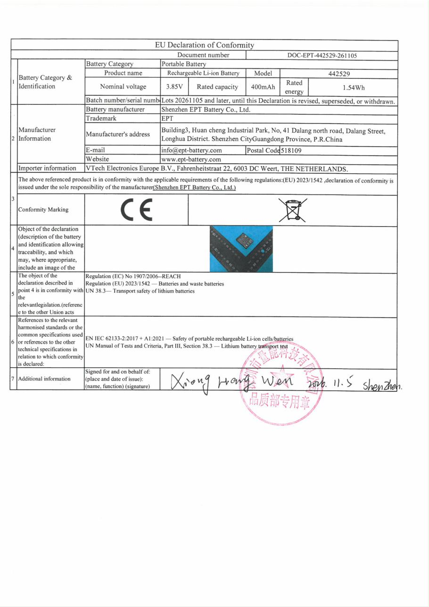

Rechargeable Li-ion Battery 442529
Shenzhen EPT Battery Co., Ltd. · Product Information (EU Battery Regulation)
I. General Information of Batteries
1Manufacturer Information
| Battery manufacturer | Shenzhen EPT Battery Co., Ltd. |
|---|---|
| Trademark | EPT |
| Manufacturer's address | Building3, Huan cheng Industrial Park, No, 41 Dalang north road, Dalang Street, Longhua District. Shenzhen CityGuangdong Province, P.R.China |
| info@ept-battery.com | |
| Postal Code | 518109 |
| Website | www.ept-battery.com |
| Importer Information | VTech Electronics Europe B.V., Fahrenheitstraat 22, 6003 DC Weert, THE NETHERLANDS. |
2Battery Category & Identification
| Battery Category | Portable Battery |
|---|---|
| Product name | Rechargeable Li-ion Battery |
| Model | 442529 |
| Nominal voltage | 3.85V |
| Rated capacity | 400mAh |
| Rated energy | 1.54Wh |
| Batch number/serial number | Refer to the production date marked on the battery label, e.g. 2026/06/04 |
3Place of Manufacture
Shenzhen China
4Date of Manufacture
On the battery label，eg：2026/6/4
5Weight
Approx 9.8g
6Capacity
400mAh
7Chemical Composition
Li-ion LCO
8Hazardous Substances (excl. Hg/Cd/Pb)
Cobalt, Nickel, 1,3-Propanesultone, Lithiumcompounds
This product does not contain substances of very high concern (SVHC) with concentrations exceeding 0.1%w/w on the REACH candidate list.
This product complies with Annex XVII of the REACH Regulation (EC)1907/2006 the applicable limitations.
9Usable Extinguishing Agent
Dry powder fire extinguishers, carbon dioxide fire extinguishers
10Critical Raw Materials >0.1% w/w
Li,Ni,Co,C,Al,Cu
Ⅱ.Waste Battery Management
a.Waste prevention
Use the battery correctly in accordance with the equipment manufacturer's instructions. Do not store or use the battery in extreme temperatures or high humidity. Remove the battery from equipment that will not be used for a long time to prevent leakage or unnecessary discharge. When the battery is exhausted, users are encouraged to take it to a designated collection point for potential material recovery or recycling.
b.Separate collection
End users are obligated to separate waste batteries from other household waste. Do not dispose of batteries in unsorted municipal waste or discard them carelessly. Segregated collection facilitates proper treatment and resource recovery (e.g., zinc, manganese, steel, lithium), in line with the environmental objectives of the European Union.
c.Collection points and processing
Waste batteries can be recycled through the following channels: collection bins at retail points; municipal recycling centers; and designated battery collection points. Collected batteries will undergo sorting, pretreatment (including electrolyte neutralization), and material recovery.
d.Safe operation
Avoid storing waste batteries together with metal objects to prevent short circuits. If a battery shows signs of leakage (e.g., white or crystalline residue), deformation, or overheating, wear protective gloves and store it separately in a plastic bag. Never dispose of batteries in fire, as this may cause explosions or release hazardous fumes. Keep batteries out of reach of children; if swallowed, seek immediate medical attention.
e.Labels and symbols
![Crossed-out wheeled bin symbol (separate collection)]() Separate collection symbol: Indicates that batteries must not be discarded casually or disposed of with ordinary household waste. They must be taken to dedicated collection points for professional processing.
Separate collection symbol: Indicates that batteries must not be discarded casually or disposed of with ordinary household waste. They must be taken to dedicated collection points for professional processing.
![CE marking]() CE marking: Indicates that the battery (or the device it belongs to) complies with applicable EU health, safety, and environmental protection requirements.
CE marking: Indicates that the battery (or the device it belongs to) complies with applicable EU health, safety, and environmental protection requirements.
f.The impact on the environment and human health
Batteries contain various materials (zinc, manganese, lithium, etc.). If improperly handled (e.g., landfilled or incinerated), electrolytes may leak and cause soil and water contamination; heavy metals may accumulate in the environment. Swallowing batteries may cause injury; keep batteries out of reach of children. Improper disposal increases the environmental burden, wastes recyclable materials, and may lead to fires or injuries during waste treatment processes. Leaking batteries may cause chemical burns; handle with care. This information is provided to support end users in the responsible use and disposal of batteries, in compliance with EU waste regulations.
Ⅲ.EU Declaration of Conformity
This product has been assessed and is confirmed to comply with the enforceable requirements of Article 6 (language and accessibility of information) and Article 13 (labelling and general information) of Regulation (EU) 2023/1542 of the European Parliament and of the Council on the sustainability, safety, labelling and information of batteries.
